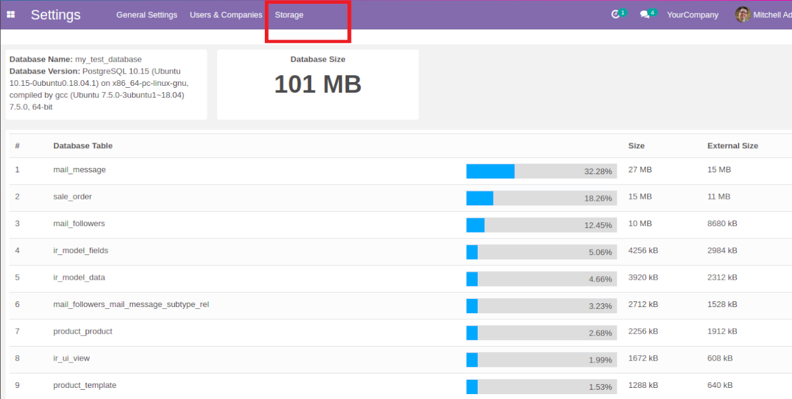

Odoo Storage Dashboard
Overview
This module displays the memory usage of the current database.
If you need any help, please contact abdullah@bisolv.com.

New menu Usage under settings. You can see the Total Size of the database and memory usage of tables (High usage First).
Odoo Usage,
Odoo Memory Usage,
Odoo Usage Database,
Odoo Memory Usage Database,
Odoo Usage Size,
Odoo Memory Usage Size,
Odoo Usage Database Size,
Odoo Memory Usage Database Size,
Odoo Find Usage,
Odoo Find Memory Usage,
Odoo Find Usage Database,
Odoo Find Memory Usage Database,
Odoo Find Usage Size,
Odoo Find Memory Usage Size,
Odoo Find Usage Database Size,
Odoo Find Memory Usage Database Size,
Odoo Find High Memory Usage Database Size,
How to Odoo Usage,
How to Odoo Memory Usage,
How to Odoo Usage Database,
How to Odoo Memory Usage Database,
How to Odoo Usage Size,
How to Odoo Memory Usage Size,
How to Odoo Usage Database Size,
How to Odoo Memory Usage Database Size,
How to Odoo Find Usage,
How to Odoo Find Memory Usage,
How to Odoo Find Usage Database,
How to Odoo Find Memory Usage Database,
How to Odoo Find Usage Size,
How to Odoo Find Memory Usage Size,
How to Odoo Find Usage Database Size,
How to Odoo Find Memory Usage Database Size,
How to Odoo Find High Memory Usage Database Size
Need Support ?
Please contact to
abdullah@bisolv.com for support, query and further customizations.
NB: You should have at least access to the server to receive support.

Scan for Skype chat.
www.bisolv.com